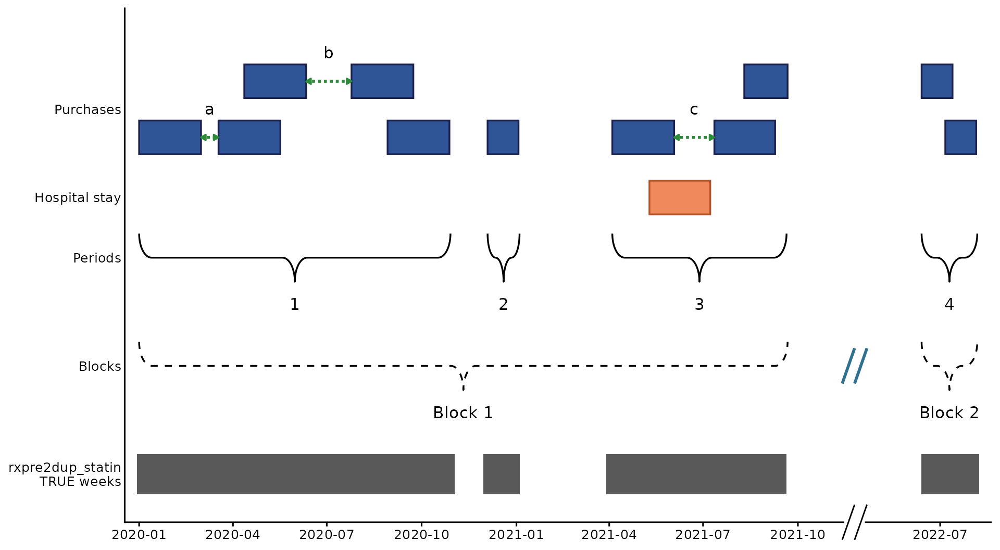

add_rxpre2dup() turns LMED dispensings into PRE2DUP drug
use periods, and marks the skeleton weeks that the periods cover. swereg
carries its own port of the PRE2DUP periods algorithm. This vignette
shows that the port gives the same periods as PRE2DUP-R.
What PRE2DUP does and why
add_rx() gives each dispensing an interval of
round(fddd) days from edatum. A week is TRUE
when it overlaps the union of these intervals. The interval length
assumes one DDD per day. A patient who takes a lower dose, or who
refills late, gets a FALSE week in the middle of continuous use. A
patient who refills early gets no extra time.
PRE2DUP (Tanskanen et al. 2015; Vattulainen et al. 2026) models drug
use instead of dispensing. It estimates the duration of each purchase
from the package, the patient’s own purchase history, and hospital
stays. It then joins purchases into drug use periods. The parameters
that bound each purchase duration come from a package design file, or
from the ATC-level rules in pre2dup_atc_parameters.
What rxpre2dup_ means
An rxpre2dup_ column is TRUE in every week, or annual
row, that a PRE2DUP drug use period covers. It is FALSE in every other
row.
The output unit is the drug use period, not the block. A block is
internal to PRE2DUP. It is a run of purchases of one ATC code by one
person, with no gap over global_gap_max (300 days by
default) between two purchases. Blocks set the scope of three rules: the
sliding-average dose, the stockpiling rule and the gap extension. One
block holds one or more drug use periods. add_rxpre2dup()
marks a period on every skeleton row that overlaps the closed interval
from its start to its end.
A gap between two periods is FALSE. This holds for a gap inside one block and for a gap between two blocks.
PRE2DUP joins a purchase to the period of the previous purchase when the duration of the previous purchase reaches it. Three rules extend that reach:
-
Extended duration. PRE2DUP adds
days_covereddays (5 by default) to the duration of the previous purchase. - Stockpiling. Suppose a purchase has a lower sliding-average dose than the purchase before it, and its extended duration does not reach the next purchase. The rule also needs a lower dose than the purchase after it, except at the second-to-last purchase of a block. When the DDDs of the two purchases last from the earlier one to the next purchase, the next purchase joins the period. The rule applies only in blocks with more than two purchases.
-
A hospital stay. The hospital supplies the drug
during a stay. The days in hospital during the duration of the previous
purchase, up to
global_hosp_max(30 by default), extend that duration.
PRE2DUP then joins two periods when the gap between them is at most
post_process_perc percent (1% by default) of the first
period’s length.
The port follows PRE2DUP’s documented stockpiling rule. It therefore
differs from PRE2DUP-R at commit 43b6d89 when person ids have different
numbers of digits. PRE2DUP-R sorts its rows by a text id
(pre2dup.R:475 and :480). It then selects the
rows in blocks of more than two purchases (:535). Next it
sorts the rows again by numeric id (:584). The stockpiling
step from :627 onward then uses the selection from the text
order on rows in the numeric order. When the two orders differ,
PRE2DUP-R applies stockpiling to the wrong rows. The equivalence below
therefore uses person ids that all have the same number of digits. A
separate check below shows that the port’s periods do not change when
the ids change.
A study reads current use from the baseline week. The person is a
current user when the rxpre2dup_ column is TRUE in that
week. The person is a previous user when the column is FALSE in the
baseline week and TRUE in an earlier week. A period of that person then
ended before baseline.
An example person
The example person buys one statin package of 30 DDDs, with a usual
duration of 30 days and a maximum of 60 days. There are 11 purchases and
one hospital stay of 59 days. The design file has one row for the
package. The example passes days_covered = 20, not the
default of 5, to the port and to add_rxpre2dup(). The wider
gap of the extended join is then visible in the figure.
design_path <- file.path(tempdir(), "rxpre2dup-example-design.xlsx")
wb <- openxlsx::createWorkbook()
openxlsx::addWorksheet(wb, "packages")
openxlsx::writeData(wb, "packages", data.frame(
atc = "C10AA01",
produkt = "Simvastatin Example",
lnmn = "Simvastatin Example 20 mg",
pack_ddd = 30,
form = "tablet",
dur_min = 20,
dur_usual = 30,
dur_max = 60,
status = "approved",
source = "synthetic",
note = NA_character_
))
openxlsx::saveWorkbook(wb, design_path, overwrite = TRUE)
design <- rxpre2dup_read_design(design_path)
design[, .(package_id, atc, pack_ddd, dur_usual, dur_max, ddd_usual, ddd_low)]
#> package_id atc pack_ddd dur_usual dur_max ddd_usual ddd_low
#> <int> <char> <num> <num> <num> <num> <num>
#> 1: 1 C10AA01 30 30 60 1 0.5.pre2dup_periods(trace = TRUE) returns the periods with
the attribute purchases, which has one row per purchase.
Its column duration is the duration that PRE2DUP estimates
for the purchase, in days. Its column joined_by names the
step of the port that joined the purchase to the previous purchase:
-
"first": the purchase starts a period. -
"duration": the duration of the previous purchase reaches it. -
"extended": only thedays_coveredextension reaches it. -
"hospital": only the hospital days reach it. -
"stockpiling": the stockpiling rule joins it. -
"merge": post-processing joins its period to the previous period.
# 20 days, not the default 5, so that the gap of the extended join is wide
# enough to draw.
days_covered <- 20
d0 <- as.Date("2020-01-01")
lmed <- data.table(
lopnr = 1L,
edatum = d0 + c(0, 77, 102, 206, 241, 338, 459, 558, 587, 894, 917),
atc = "C10AA01",
produkt = "Simvastatin Example",
lnmn = "Simvastatin Example 20 mg",
fddd = 30
)
hosp <- data.table(lopnr = 1L, indatum = d0 + 495, utdatum = d0 + 554)
# The same input as add_rxpre2dup() gives the port.
purchases <- data.table(
id = 1L,
atc = lmed$atc,
package_id = 1L,
date = lmed$edatum,
ratio = 1,
ddd = lmed$fddd
)
packages <- design[, .(package_id, atc, dur_min, dur_usual, dur_max, ddd_low, ddd_usual)]
stays <- data.table(id = 1L, admission = hosp$indatum, discharge = hosp$utdatum)
periods <- swereg:::.pre2dup_periods(
purchases, packages, pre2dup_atc_parameters,
hosp = stays, trace = TRUE, days_covered = days_covered
)
trace <- attr(periods, "purchases")
periods[, .(block, period, start, end, n_purchases, hospital_days)]
#> block period start end n_purchases hospital_days
#> <int> <int> <IDat> <IDat> <int> <num>
#> 1: 1 1 2020-01-01 2020-10-28 5 0
#> 2: 1 2 2020-12-04 2021-01-03 1 0
#> 3: 1 3 2021-04-04 2021-09-19 3 58
#> 4: 2 4 2022-06-13 2022-08-05 2 0
trace[, .(date, block, period, duration = round(duration, 1), joined_by)]
#> date block period duration joined_by
#> <IDat> <int> <int> <num> <char>
#> 1: 2020-01-01 1 1 60.0 first
#> 2: 2020-03-18 1 1 60.0 extended
#> 3: 2020-04-12 1 1 60.0 duration
#> 4: 2020-07-25 1 1 60.0 stockpiling
#> 5: 2020-08-29 1 1 60.0 duration
#> 6: 2020-12-04 1 2 30.0 first
#> 7: 2021-04-04 1 3 60.0 first
#> 8: 2021-07-12 1 3 58.9 hospital
#> 9: 2021-08-10 1 3 42.0 duration
#> 10: 2022-06-13 2 4 30.0 first
#> 11: 2022-07-06 2 4 30.0 duration
stopifnot(
# 4 periods in 2 blocks, with 5, 1, 3 and 2 purchases.
nrow(periods) == 4L,
uniqueN(periods$block) == 2L,
identical(periods$block, c(1L, 1L, 1L, 2L)),
identical(periods$n_purchases, c(5L, 1L, 3L, 2L)),
# Period 1 holds an extended join and a stockpiling join. Period 3 holds
# a hospital join.
all(c("extended", "stockpiling") %in% trace[period == 1L, joined_by]),
"hospital" %in% trace[period == 3L, joined_by]
)
# The figure caption, from the trace and the periods.
letter_of <- c(extended = "a", stockpiling = "b", hospital = "c")
meaning_of <- c(extended = "extended duration", stockpiling = "stockpiling", hospital = "hospital stay")
joins <- intersect(names(letter_of), trace$joined_by)
kind <- fifelse(periods$n_purchases >= 3L, "continuous", "isolated")
caption <- paste0(
"A dark blue bar is a purchase of the example person. It starts on the purchase date and lasts for the ",
"duration that PRE2DUP estimates. Bars that overlap sit on separate rows. The orange bar is the hospital stay. ",
"A green connector marks a join that needs one of three rules. It runs from the end of the previous purchase ",
"to the start of the joined purchase. ",
"Purchase connectors: ", paste0(letter_of[joins], ") ", meaning_of[joins], collapse = ", "), ". ",
"Drug use periods: ",
paste0(
periods$period, ") ", kind, " with ", periods$n_purchases,
fifelse(periods$n_purchases == 1L, " purchase", " purchases"),
fifelse(periods$hospital_days > 0, " and a hospital stay", ""),
collapse = ", "
), ". ",
"This example uses days_covered = ", days_covered,
" so the extended-duration gap is visible; the default is 5. ",
"An isolated period has fewer than three purchases, so PRE2DUP gives its purchases the package-based duration. ",
"The dashed braces are the blocks. The slashes mark a gap of more than global_gap_max days between two blocks, ",
"which the time axis shortens. The bottom row shows the weeks where rxpre2dup_statin is TRUE."
)add_rxpre2dup() maps the periods to a skeleton.
skeleton <- create_skeleton(1L, 2020, "2022-52")
add_rxpre2dup(
skeleton,
lmed,
hosp = hosp,
codes = list(rxpre2dup_statin = "C10AA"),
design = design,
days_covered = days_covered
)
weeks <- skeleton[is_isoyear == FALSE]
weeks[, monday := isoyearweeksun - 6L]
# Each TRUE week overlaps a period, and each FALSE week overlaps none.
covers <- vapply(
seq_len(nrow(weeks)),
function(i) any(periods$start <= weeks$isoyearweeksun[i] & periods$end >= weeks$monday[i]),
logical(1)
)
stopifnot(identical(weeks$rxpre2dup_statin, covers))The figure follows the layout of the PRE2DUP diagram of Vattulainen
et al. (2026). swereg’s own ggplot2 code draws it from
trace, periods and weeks. The
code is in the source of this vignette.

A dark blue bar is a purchase of the example person. It starts on the purchase date and lasts for the duration that PRE2DUP estimates. Bars that overlap sit on separate rows. The orange bar is the hospital stay. A green connector marks a join that needs one of three rules. It runs from the end of the previous purchase to the start of the joined purchase. Purchase connectors: a) extended duration, b) stockpiling, c) hospital stay. Drug use periods: 1) continuous with 5 purchases, 2) isolated with 1 purchase, 3) continuous with 3 purchases and a hospital stay, 4) isolated with 2 purchases. This example uses days_covered = 20 so the extended-duration gap is visible; the default is 5. An isolated period has fewer than three purchases, so PRE2DUP gives its purchases the package-based duration. The dashed braces are the blocks. The slashes mark a gap of more than global_gap_max days between two blocks, which the time axis shortens. The bottom row shows the weeks where rxpre2dup_statin is TRUE.
The gaps between periods 1, 2 and 3 lie inside block 1, and their weeks are FALSE. The gap between period 3 and period 4 lies between two blocks, and its weeks are FALSE too.
A study derives both exposures from the column. The chunk below reads them for three baseline weeks. Week 2021-02 lies in a gap inside block 1, and week 2022-02 lies in the gap between the blocks.
weeks[, ever_before := cumsum(shift(rxpre2dup_statin, fill = FALSE)) > 0]
weeks[, current_use := rxpre2dup_statin]
weeks[, previous_use := !rxpre2dup_statin & ever_before]
weeks[isoyearweek %in% c("2020-10", "2021-02", "2022-02"), .(isoyearweek, current_use, previous_use)]
#> isoyearweek current_use previous_use
#> <char> <lgcl> <lgcl>
#> 1: 2020-10 TRUE FALSE
#> 2: 2021-02 FALSE TRUE
#> 3: 2022-02 FALSE TRUEThe design file
A design file says how long one dispensing of each package lasts.
rxpre2dup_read_design() reads it and checks every row. The
format is an .xlsx workbook with one sheet,
packages, and one row per package. The columns are, in
order:
-
atc(character, the full ATC code) -
produkt(character, as LMED writes it) -
lnmn(character; matched aftertolower(trimws())) -
pack_ddd(numeric > 0: the DDDs one dispensing of this package holds, as LMED’sfddd) -
form(character, free text, e.g. “tablet”) -
dur_min,dur_usual,dur_max(numeric > 0, days;dur_min <= dur_usual <= dur_max) -
status("auto"or"approved"; any other value refuses the file) -
source(character, may be empty) -
note(character, may be empty)
swereg computes ddd_usual = pack_ddd / dur_usual and
ddd_low = pack_ddd / dur_max. The file never stores
them.
The sheet MAY have one more column, design_date. Every
row MUST then hold its date as text YYYY-MM-DD. Format that
column as text in Excel. An Excel date cell reads as a number, and the
reader refuses it.
One workbook then holds every version of the design, and a new
version is a block of appended rows.
rxpre2dup_read_design(path, as_of) drops the rows dated
after as_of. For each atc, it then keeps the
rows of the latest remaining date. An atc that the new
block leaves out keeps the rows of its own latest date. The value rules
and the duplicate-key rule apply only to the kept rows, so two dates of
one package never form a duplicate key.
LMED’s fddd is the total DDDs of one dispensing. A
design row therefore describes one dispensing amount, and every
dispensing enters PRE2DUP with ratio = 1. Suppose a
pharmacy hands out 200 tablets as 2 × 100. That dispensing is its own
row, with its own pack_ddd.
A dispensing matches a row when atc,
produkt and tolower(trimws(lnmn)) are equal
and abs(fddd - pack_ddd) < 0.005. Two rows can have the
same atc, produkt and normalised
lnmn. Their values of pack_ddd MUST then
differ by 0.01 or more, else the file is refused. A dispensing therefore
matches at most one row. A dispensing with no row uses the ATC-level
rule. add_rxpre2dup() reports the share of such purchases
per ATC code in one message line.
Calling add_rxpre2dup() from a phase-3 step
A phase-3 step gets fn(skeleton, batch_data, config).
batch_data is a named list with one table per group. The
group names below are examples, so use the names of your own study.
rv_statins <- function(skeleton, batch_data, config) {
design <- rxpre2dup_read_design("design/statins.xlsx", as_of = "2026-11-18")
add_rxpre2dup(
skeleton,
lmed = batch_data[["lmed"]],
hosp = batch_data[["npr_inpatient"]],
id_name = "lopnr",
codes = list(rxpre2dup_statin = "C10AA"),
design = design
)
return(invisible(skeleton))
}
study$register_randvars("statins", rv_statins)Put the as_of date in the body of the step. The step’s
hash covers its body, so a new as_of replays the step. A
row dated after as_of does not change the result. Do not
leave as_of NULL in a step. Appended rows then change the
design, and the step’s hash stays the same.
Equivalence with PRE2DUP-R
The chunks in this section run the port and PRE2DUPR 0.2.2 (commit 43b6d89) on the same synthetic purchases. They run only when PRE2DUPR is installed. PRE2DUPR was installed when this vignette was built, so the output below is live.
The fixture generators are copies of those in
tests/testthat/test-pre2dup_equivalence.R, with the same
seeds. The CI test runs scenarios 1 to 13. This vignette shows scenarios
2 (stockpiling), 8 (hospital stays) and 11 (a mixed population of 1,160
persons). Every fixture for PRE2DUP-R uses person ids from 100001 to
999999, which all have six digits.
The port reads a missing ddd as 0, and PRE2DUP-R refuses
a ddd of 0. So PRE2DUP-R gets ddd = NA where
the port gets ddd = 0. PRE2DUP-R returns a fractional
dup_end, and the comparison takes the day that holds
it.
reference_periods <- function(fx) {
pre <- copy(fx$purchases)[ddd == 0, ddd := NA_real_]
hosp <- fx$hosp
ref <- suppressMessages(PRE2DUPR::pre2dup(
pre_data = pre, pre_person_id = "id", pre_atc = "atc",
pre_package_id = "package_id", pre_date = "date", pre_ratio = "ratio",
pre_ddd = "ddd",
package_parameters = fx$packages, pack_atc = "atc", pack_id = "package_id",
pack_ddd_low = "ddd_low", pack_ddd_usual = "ddd_usual",
pack_dur_min = "dur_min", pack_dur_usual = "dur_usual",
pack_dur_max = "dur_max",
atc_parameters = PRE2DUPR::ATC_parameters, atc_class = "partial_atc",
atc_ddd_low = "lower_ddd_atc", atc_ddd_usual = "usual_ddd_atc",
atc_dur_min = "minimum_dur_atc", atc_dur_max = "maximum_dur_atc",
hosp_data = hosp,
hosp_person_id = if (is.null(hosp)) NULL else "id",
hosp_admission = if (is.null(hosp)) NULL else "admission",
hosp_discharge = if (is.null(hosp)) NULL else "discharge",
data_to_return = "periods"
))
return(data.table(
id = as.integer(as.character(ref$id)),
atc = as.character(ref$atc),
start = as.Date(floor(as.numeric(ref$dup_start))),
end = as.Date(floor(as.numeric(ref$dup_end))),
n_purchases = ref$dup_n_purchases,
hospital_days = ref$dup_hospital_days,
total_ddd = ref$dup_total_DDD
))
}
port_periods <- function(fx) {
out <- swereg:::.pre2dup_periods(fx$purchases, fx$packages, pre2dup_atc_parameters, hosp = fx$hosp)
return(data.table(
id = out$id,
atc = out$atc,
start = as.Date(out$start),
end = as.Date(out$end),
n_purchases = out$n_purchases,
hospital_days = out$hospital_days,
total_ddd = out$total_ddd
))
}
# The number of port periods that equal a PRE2DUP-R period on id, atc,
# start, end, n_purchases and hospital_days, with total_ddd within 1e-8.
compare_periods <- function(scenario, fx) {
ref <- reference_periods(fx)
port <- port_periods(fx)
keys <- c("id", "atc", "start", "end", "n_purchases", "hospital_days")
m <- merge(port, ref, by = keys, suffixes = c("_port", "_ref"))
n_identical <- sum(abs(m$total_ddd_port - m$total_ddd_ref) < 1e-8)
return(data.table(
scenario = scenario,
persons = uniqueN(fx$purchases$id),
purchases = nrow(fx$purchases),
periods_pre2dup_r = nrow(ref),
periods_port = nrow(port),
identical_periods = n_identical
))
}
fixtures <- list(
"2: stockpiling" = .p2d_gen_stockpiling(30L, .p2d_id0, 102L),
"8: hospital stays" = .p2d_gen_hosp(30L, .p2d_id0, 108L),
"11: mixed population" = .p2d_gen_mixed(111L)
)
result <- rbindlist(Map(compare_periods, names(fixtures), fixtures))
result
#> scenario persons purchases periods_pre2dup_r periods_port
#> <char> <int> <int> <int> <int>
#> 1: 2: stockpiling 30 240 30 30
#> 2: 8: hospital stays 30 270 30 30
#> 3: 11: mixed population 1160 22667 1590 1590
#> identical_periods
#> <int>
#> 1: 30
#> 2: 30
#> 3: 1590
stopifnot(
result$identical_periods == result$periods_pre2dup_r,
result$identical_periods == result$periods_port
)In each scenario the count of identical periods equals the number of periods from each side.
Relabelled person ids
The next chunk gives the port the scenario 11 fixture under its own ids and under the ids 1 to N. The ids 1 to N have one to four digits. The port returns identical periods under both labellings, after the ids are mapped back. This chunk does not need PRE2DUPR.
fx11 <- .p2d_gen_mixed(111L)
ids <- sort(unique(fx11$purchases$id))
relabel <- function(fx, new_ids) {
out <- fx
out$purchases <- copy(fx$purchases)[, id := new_ids[match(id, ids)]]
out$hosp <- copy(fx$hosp)[, id := new_ids[match(id, ids)]]
return(out)
}
fx11_rank <- relabel(fx11, seq_along(ids))
run_port <- function(fx) {
return(swereg:::.pre2dup_periods(fx$purchases, fx$packages, pre2dup_atc_parameters, hosp = fx$hosp))
}
port_own <- run_port(fx11)
port_rank <- run_port(fx11_rank)
port_rank[, id := ids[id]]
stopifnot(identical(as.data.frame(port_rank), as.data.frame(port_own)))
c(periods_own_ids = nrow(port_own), periods_ids_1_to_n = nrow(port_rank))
#> periods_own_ids periods_ids_1_to_n
#> 1590 1590PRE2DUP-R gives a different count of periods under the ids 1 to N. That is the stale selection described in “What rxpre2dup_ means”.
Credit
The port follows PRE2DUP-R (https://github.com/piavat/PRE2DUP-R), commit 43b6d89, by
Pia Vattulainen, under the MIT licence. inst/COPYRIGHTS
names the ported files. pre2dup_atc_parameters holds
PRE2DUP-R’s ATC_parameters with unchanged values.
- Tanskanen A, Taipale H, Koponen M, et al. From prescription drug purchases to drug use periods: a second generation method (PRE2DUP). BMC Medical Informatics and Decision Making 2015;15:21. doi:[10.1186/s12911-015-0140-z](https://doi.org/10.1186/s12911-015-0140-z).
- Vattulainen P, Tanskanen A, Taipale H. PRE2DUP-R, advanced, open science method to estimate drug use periods for pharmacoepidemiology. International Journal of Medical Informatics 2026;212:106344. doi:[10.1016/j.ijmedinf.2026.106344](https://doi.org/10.1016/j.ijmedinf.2026.106344).